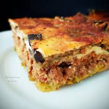
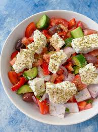

Popular Local Dishes

Moussaka
A hearty layered dish of eggplant, spiced ground meat, and béchamel sauce. A true Greek classic!

Souvlaki
Grilled meat skewers served with pita bread, tzatziki, and fresh vegetables.

Horiatiki (Greek Salad)
Fresh tomatoes, cucumbers, onions, olives, and feta cheese drizzled with olive oil.